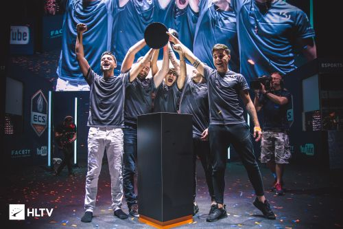
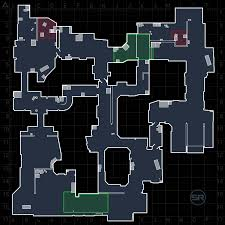
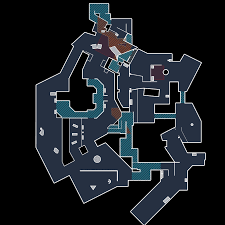
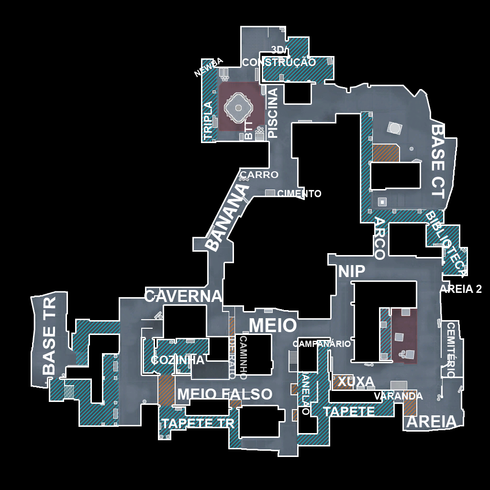

COMPETITIVO
Atualmente existem muitos grandes times no cenário competitivo do CS:GO. Ao contrário de outros e-sports, no CS:GO, times brasileiros quase sempre estão no topo. A Luminosity Gaming, que depois se tornou SK e MIbr tem em sua conta dezenas de torneios vencidos e vários troféus de grandes campeonatos
MAPAS
O competitivo de CS:GO possui variados mapas para se joga. Entre os principais estão:
Mirage, um mapa desértico, com 2 espaços para plants bem separados uns dos outros, onde o grupo CT tem ligeira vantagem sobre o TR
Overpass, um mapa em que um bomb site fica localizado em um local em construção, em meio a canos e equipamentos de obra, enquanto o outro bomb site se localiza na parte de cima, no spawn do grupo CT. É um mapa em que os CT's tem uma vantagem esmagadora sobre o grupo TR
Inferno, um mapa semelhante a um pequeno vilarejo, em que o CT leva uma grande vantagem sobre o TR pois só há uma passagem direta para o bomb-site B
